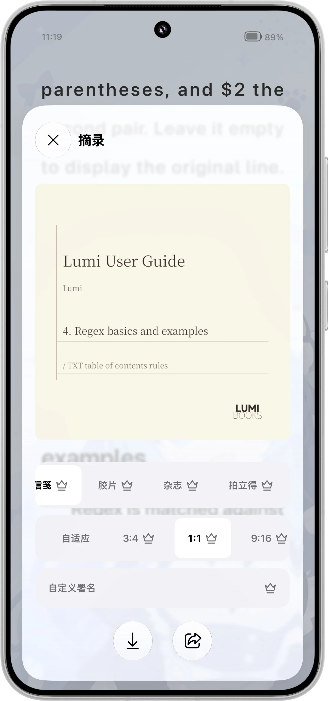

打开各种书
EPUB、PDF、TXT、MOBI、AZW、AZW3、CBZ 与 Markdown。
了解多格式阅读书在身边，数据也在身边。一个安静、自由、为长久阅读而打磨的 Android 电子书阅读器。

从刚刚读到的句子，到下一本想读的书；从安静翻页到戴上耳机。阅读跟着你的节奏走。

Lumi 不需要账号，不追踪你的阅读，也不会把书架变成广告位。书籍、进度、笔记默认留在本机。需要同步时，连接你自己的 WebDAV。
了解 Lumi 的隐私原则 → 本地优先 · 主动联网 · 无追踪
本地优先 · 主动联网 · 无追踪需要时就在手边，不需要时不打扰。Lumi 把细节放进阅读的每个步骤。
EPUB、PDF、TXT、MOBI、AZW、AZW3、CBZ 与 Markdown。
了解多格式阅读主题、字体、字号、行距、页边距和翻页方式，都可以慢慢调。
了解阅读设置高亮、笔记、书签、标签、摘录卡片，以及 TXT / Markdown 导出。
了解摘录和笔记用自己的 WebDAV 同步书架与进度，远程书籍按需下载。
了解云书架系统朗读、全屏听书、章节切换和悬浮字幕。
了解听书功能阅读小组件、阅读统计、封面书架、双页阅读与分类管理。
了解书架与统计
阅读时轻轻一划，想法就有了自己的位置。
高亮、笔记、书签与标签，陪你重新找到那些打动过你的文字。把摘录做成卡片分享，或将整本书的笔记导出，带回自己的工作流。
看看如何保存与导出 →

连上自己的 WebDAV 服务器，远程书架就能随身打开。
按需下载书籍与同步阅读进度。书籍和笔记不会经过 Lumi 的账号云端；服务器、同步时机和数据去留都由你决定。
了解远程书库 →基础阅读免费、开源、无广告；官方版提供可选的阅读报告、高级摘录与更多整理工具。不开通也能安心读完一本书。
阅读、书架、主题、书签、笔记和多格式支持不设会员门槛。
官方版的报告、标签管理和高级摘录，解锁前保留功能预览。
自行编译和审查公共版本，Premium 与基础版数据保持兼容。